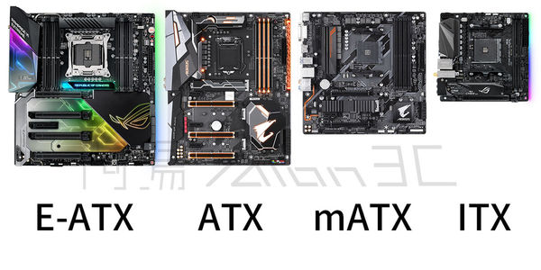
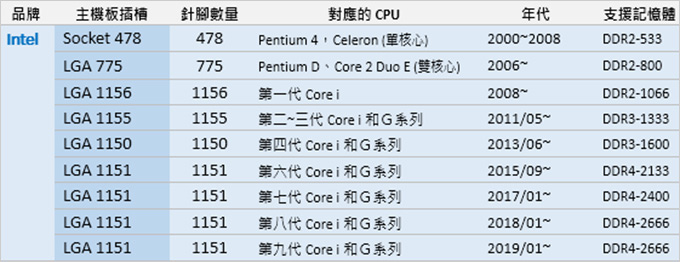
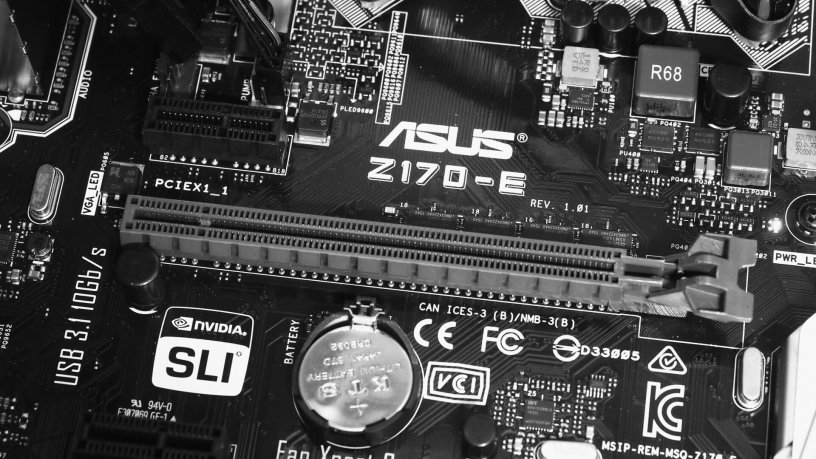
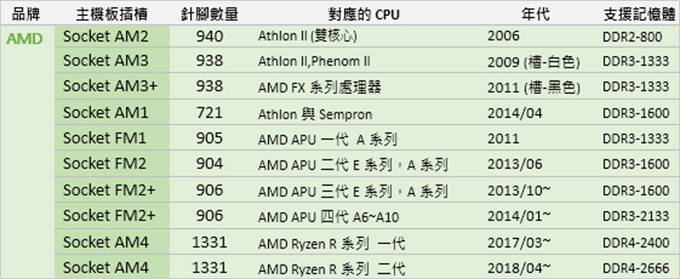

主機板 Motherboard
主機板是構成複雜電子系統例如電腦的中心或者主電路板。 典型的主機板能提供一系列接合點，供處理器、顯示卡、硬碟機、記憶體、對外裝置等裝置接合。它們通常直接插入有關插槽，或用線路連接。主機板上最重要的構成元件是晶片組（Chipset）。早期的晶片組通常由北橋和南橋組成，現在的Intel/AMD主機板絕大多數採用單晶片設計，增強其效能（自Intel 5系列晶片組/AMD APU平台開始，晶片組採用單晶片組設計，主機板上只有南橋，Intel將其稱為PCH，AMD將其稱為FCH，北橋被移入CPU中以增強效能）。晶片組為主機板提供一個通用平台供不同裝置連接，控制不同裝置的溝通。它亦包含對不同擴充插槽的支援，例如處理器、PCI Express。晶片組亦為主機板提供額外功能，例如內建於晶片組/CPU的顯示卡。現在的家用主機板絕大多數內建聲卡、網路卡。一些主機板也整合紅外通訊技術、藍牙和802.11（Wi-Fi）等功能。

1. CPU插座 (LGA 1366)
2. 北橋（被散熱片覆蓋）
3. 南橋（被散熱片覆蓋）
4.記憶體插座（三通道）
5. PCI擴充槽
6. PCI Express擴充槽
7. 跳線
8. 控制面板（開關掣、LED等
9. 20+4pin主機板電源
10. 4+4pin處理器電源
11. 背板I/O
12. 前置USB針腳
13. 前置面板音效針腳
14. SATA插座
15. ATA插座（大部分Intel Sandy Bridge以後的家用主機板都已捨棄IDE介面）
16. 軟碟機插座（目前絕大多數主機板已捨棄軟碟機介面）
https://zh.wikipedia.org/wiki/%E4%B8%BB%E6%9D%BF
主機板規格
市面上的大多的主機板規格:

E-ATX: 電競級主機板，若有玩遊戲的需求，推薦此類型主機板，但因為本身體積略大，購買時應注意主機殼大小及擺放位置
ATX: 市面上最常見的主機板類型，可同時因應文書及電競的需求，極為推薦
mATX: 適用於較小的主機殼中，若有空間上的需求，推薦此類型主機板
ITX: 最小也是最不常見的主機板，若無特殊需求，建議不要購買此類型主機板
主機板型號
在購買主機板時，應先決定好要購買Intel還是AMD的中央處理器，並且依據CPU腳位挑選主機板。
CPU腳位可以想像成CPU的插槽形狀，隨著時代的變化，CPU的腳位也會有所不同
Intel
自六代後的處理器都採用1151腳位，而主機板型號通常都會帶著一個英文字母，分別是Z、H、B，代表著功能的強弱，隨後會加上三個數字，而數字越大則表示此晶片越新，目前八代以上的CPU只相容Z370這種晶片，而不相容文書用的H270和B250，雖然插槽裝得下去，但是沒辦法使用。

AMD
Ryzen系列的處理器都採用AM4腳位，而主機板型號通常都會帶著一個英文字母，分別是X、B、A，代表著功能的強弱，隨後會加上三個數字，而數字越大則表示此晶片越新，其中最為常見的為高階的X370，主流的B350和文書用的A320。
